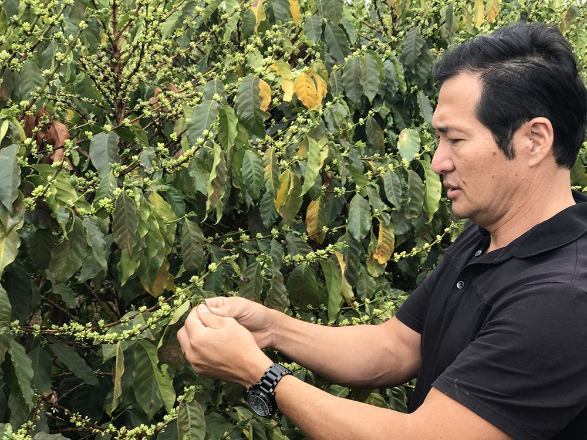
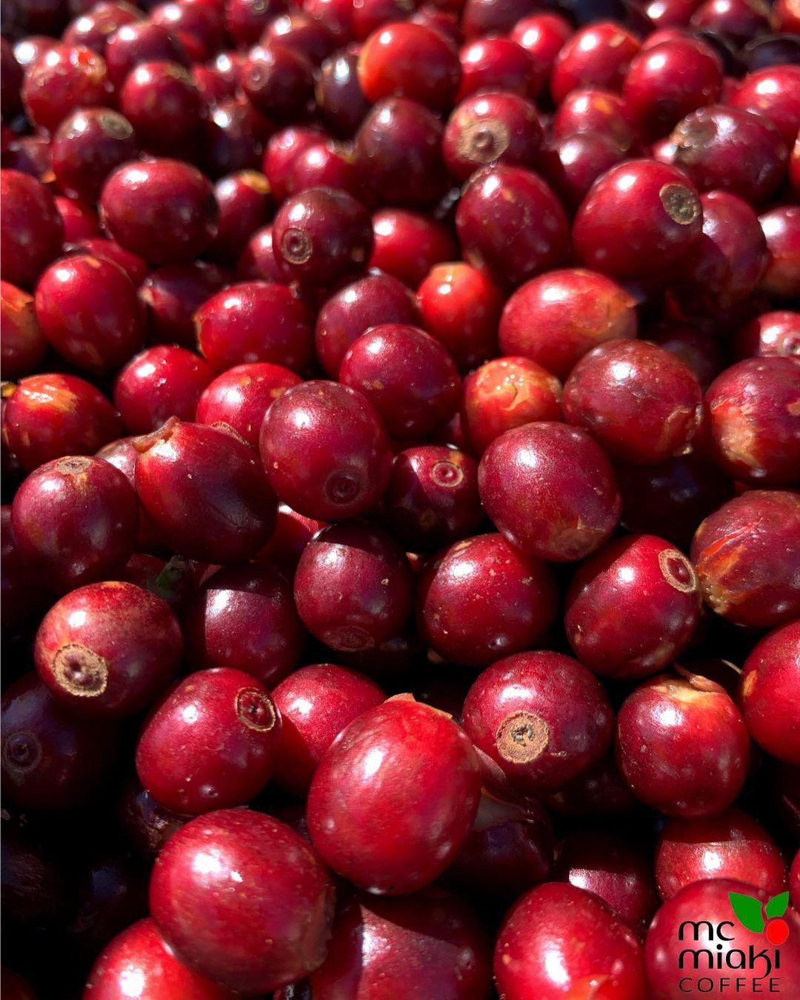
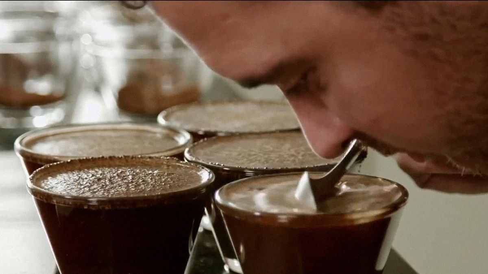
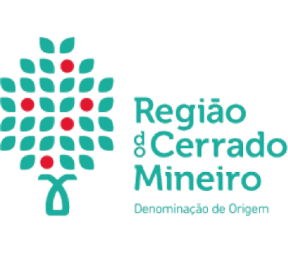

Cafés especiais por toda a extensão
Há três gerações a família Miaki cultiva café no Cerrado Mineiro. São 2.665 hectares em Patrocínio, a maior parte no Chapadão de Ferro, a até 1.250 metros de altitude.
Uma família apaixonada pelo café, que se relaciona de forma sábia com a natureza e produz lotes fantásticos, de maneira sustentável. Verdadeiras joias.
de café plantado em Patrocínio, MG.
produtores, três no Chapadão de Ferro.
de altitude no ponto mais alto das lavouras.
de reserva legal preservada nas propriedades.



A cafeicultura faz parte da família desde os anos 30, quando os avós de Marcos Cézar Miaki chegaram do Japão para trabalhar em cafezais do Paraná. Em 1978 a família recomeçou em Patrocínio.
Hoje a empresa é gerida por Marcos Cézar e Brasemir Miaki, com os filhos Matheus e Amanda. Tradição que olha para o futuro.
Conheça a MC MiakiSeis núcleos, uma só régua.
Fichas completas- 01 Porta do CéuChapadão de Ferro 1.170 a 1.235 maltitude 333 hacultivados
- 02 RecantoChapadão de Ferro 1.250 maltitude 493 hacultivados
- 03 ShalomChapadão de Ferro 1.200 maltitude 610,06 hacultivados
- 04 AbadiaTejuco · Cerrado Mineiro 980 a 1.050 maltitude 196 hacultivados
- 05 Bom JardimCerrado Mineiro 900 a 996 maltitude 285 hacultivados
- 06 LajinhaLajinha · Cerrado Mineiro 850 a 914 maltitude 501 hacultivados
Um vulcão que não eclodiu.
O Chapadão de Ferro nasceu de um vulcão que não chegou a se abrir. A erupção contida empurrou minerais para a superfície, e hoje eles alimentam um dos solos mais férteis do Cerrado Mineiro.
Entenda o terroir- 1.250 m
Altitude. As lavouras do Chapadão ficam entre 1.170 e 1.250 metros.
- Dia e noite
Amplitude térmica. Dias quentes e noites frias deixam a maturação lenta e concentram açúcares.
- Xícara
Acidez pronunciada e, só neste terroir, um leve toque salgado.
Da muda à xícara, tudo rastreável.
Ver o processo- 01

Plantio de precisão
Mudas selecionadas e sulcos abertos com GPS.
- 02

Colheita no ponto
Mecanizada ou à mão, sempre no momento certo da cereja.
- 03

Secagem cuidadosa
Terreiro, terreiro suspenso e secador, lote a lote.
- 04

Prova e seleção
Rebenefício, blends e prova antes de cada embarque.
A fazenda em movimento.
Todos os filmesFruto de um trabalho constante.
Toda a história- 20252× 3º
33º Seminário do Café · ACARPA
3º lugar no Prêmio Produtividade em duas categorias: sequeiro (116 sc/ha) e irrigado (104 sc/ha).
- 2020Destaque
illy · Fornecedor Sustentável do Ano
Reconhecimento à cafeicultura sustentável praticada em todos os núcleos.
- 2012 a 20208×
Prêmio Ernesto Illy de Qualidade
Finalista em 8 edições: 2012, 2013, 2014, 2015, 2016, 2018, 2019 e 2020.
- 20131º
Prêmio Ernesto Illy de Qualidade
Campeão nacional.
- Safra 2017/18Finalista
V Prêmio Região do Cerrado Mineiro
Núcleo Recanto finalista na categoria Cereja Descascado.
- Safra 2015/16Finalista
III Prêmio Região do Cerrado Mineiro
Núcleo Shalom finalista na categoria Natural.
 Rainforest AllianceFazendas certificadas
Rainforest AllianceFazendas certificadas Nespresso AAAPrograma de qualidade sustentável
Nespresso AAAPrograma de qualidade sustentável C.A.F.E. PracticesStarbucks
C.A.F.E. PracticesStarbucks UTZ CertifiedHoje parte da Rainforest Alliance
UTZ CertifiedHoje parte da Rainforest Alliance
Região do Cerrado MineiroDenominação de origem

Cafeeira Porta do Céu.
O armazém do grupo, criado para armazenar e preparar os cafés dos núcleos MC Miaki, também presta serviço para produtores da região.
Quero armazenar meu café- ArmazenagemLotes identificados e rastreáveis, em estrutura própria.
- Rebenefício e preparoLimpeza, classificação e seleção no padrão do comprador.
- Prova e padronizaçãoProva de xícara para formar lotes e blends consistentes.